02.1 Vehicle Basic 载具基础
Preparation 准备
Assets:
- Vehicle Model with textures and Vehicle HitBox
- Vehicle Engine Sounds(Start,Idle,Running)
- Fire Sound(Near and Far)
Recommand softwares for art:
- Blender 2.7
Blender is a free software for modeling. It can be used for making tank model and hitbox model. You can download it from https://www.blender.org/download/.
- Substance Painter & Photoshop
Set up mod project environment in GetStarteds
资源:
- 模型，贴图，与载具伤害模型
- 坦克引擎音效 （包括 启动，待机，运行）
- 坦克开火音效 （包括近，远）
推荐的美术相关软件
- Blender 2.7
Blender 是一个免费的建模软件，你可以在 Steam 上进行下载安装。我们可用 Blender 制作载具的模型与伤害模型。
- Substance Painter 与 PhotoShop
设置模组的开发环境 （查看文档 1 项目初始化）
Process the Vehicle Model 预处理载具模型

Before get started,you should learn about the 3D model softwares.Blender is recommended because it is free and small.The following tutorial will use Blender as the modeling software.
在开始之前，你应该要掌握至少一个 3D 建模软件的使用。 我推荐你使用 Blender ，因为他免费。 在接下来的教程中，我都将使用 Blender
Child-Parent Relationship and naming 父子关系与命名
The wheels,turret,gun and dym(barrel) of the vehicle model should have a correct child-parent relationship and name.
The child-parent relationship should like this.
坦克的车轮，炮塔，主炮，炮管设置正确的父子关系。
| ** ** | ** ** | ** ** |
|---|---|---|
| MainBody | ||
| LeftWheel | l_1-l_n | |
| LeftUpperWheel | l_1-l_n | |
| LeftTrack | ||
| RightWheel | r_1-r_n | |
| RightUpperWheel | ru_1-ru_n | |
| RightTrack | ||
| Turret | Gun | Dym |
You should have objects with names above. You should not miss any of it.
LeftWheel,LeftUpperWheel,RightWheel,RightUpperWheel are empty objects.
MainBody,Turret,Gun,Dym are model.
你的载具的物体名称需要与上表保持一致，不能遗漏任何一个。
LeftWheel,LeftUpperWheel,RightWheel,RightUpperWheel 是空物体
MainBody,Turret,Gun,Dym 是模型
You can refer the following videos
- Model pre-process from websites https://youtu.be/M0aoe-EPTjs
- Preprocessing for Tank Destroyer https://youtu.be/Ex-P-mdSWJk
你可以参考如下的视频
Model Export 模型导出
Axis 轴向
Scale 缩放
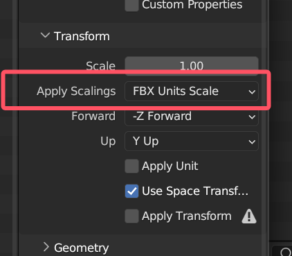
Create Vehicle HitBox 创建载具伤害模型

The HitBox Model is used for penetration system. You should separate HitBox to pieces. Every piece of HitBox will have their own armor thickness after being imported to the game engine. In addition, It is not recommend to have a very precise hit box model. It will affect performance.
伤害模型用于游戏的击穿系统，你需要将不同装甲数值的模型分成不同的物体。此外，不建议伤害模型面数很高，会影响游戏性能。
HitBox Naming 载具伤害模型命名
Model Optimization 模型优化
Number of model faces should not be larger than 20,000.
Number of materials should not be larger than 4.
Texture should not larger than 2048 x 2048
Number of hitbox faces should not be larger than 5,000
模型面数不应该超过 2万面
模型材质数不应该超过 4个
贴图分辨率不应该超过 2048 x 2048
伤害模型面数不应该超过 5千面
Import Model and set materials 设置模型与材质

Before getting started,you should have a quick view of the basic control of the Unity Engine.
Open the project which is mentioned in the
.
Create a folder in the project window in the Unity Engine,and drag your models into that folder.
Set up the materials.
在开始下面步骤之前，你应该先了解 Unity 引擎的一些基础操作。
打开在项目初始化中提及的模组项目环境
在项目中创建一个文件夹，将你的模型拖入其中。设置相关材质。
Set Up Collision 设置碰撞

Drag the vehicle model from the project window to the Hierachy window to set up the collision.
Add box colldiers to the MainBody and Turret. Modify the size of box collider to suit the the MainBody and Turret.
Then,create a subfolder in your folder and name it Collision.Drag your model from the Hierachy Windows into that folder.
You can refer the Template-Vehicle folder.
将模型从 Project 窗口拖入 Hierarchy 窗口，进行碰撞的设置。
对 MainBody 与 Turret 物体增加 Box Collider 组件。 根据模型来调整其大小。 注意： MainBody 的 碰撞不可以设置太低，会导致坦克底盘被地形卡住无法移动。 在设置完碰撞后，将模型从 Hierarchy 窗口再拖回至 Project 窗口，保存为预制体（Prefab）。 这个就是你的载具碰撞预制体文件了。你可以参考 Template-Vehicle 示例文件夹。
Create Vehicle Data 创建载具数据
Mod Editor 模组编辑器
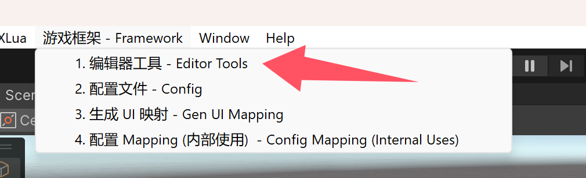
You should find Framework/1. Editor Tool in the top windows bar alternatively short key Ctrl+G to open Editor Tools ,if there are no errors in the console.
你应该可以在顶部菜单栏 游戏框架/1. 编辑器工具 ，或者按 Ctrl + G 快捷键，以打开创建窗口
Click Open Create Vehicle Button
点击 Open Create Vehicle 按钮
Create Vehicle Data Editor 创建载具数据编辑器
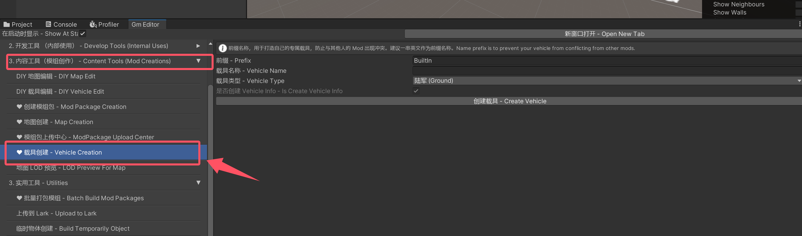
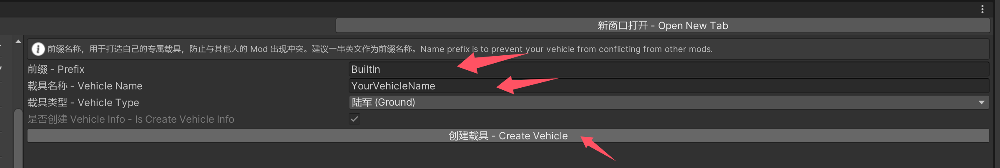
Input the name of your vehicle. Then,click Create Vehicle button. The name of the vehicle should only contains alphabet,number and underscore. Do not contain blank ! It will not load on certain platform.
输入载具的名称，然后点击 Create Vehicle 按钮进行创建。载具名称只可以包括中文，字母，数字和下划线。不要包含空格，会导致某些平台加载异常。

These files will be created after you clicked.
当按下按钮后，这些文件会被创建。
In the following,I will guide you how to set them one by one.
接下来我会一步步教你怎么设置如下的组件，你可以按照顺序一一设置。
1. VehicleInfo 坦克描述数据
You can set vehicle name,rank and other basic info in VehicleInfo.
你可以在 VehicleInfo 设置载具的名称，等级以及其他一些基础信息
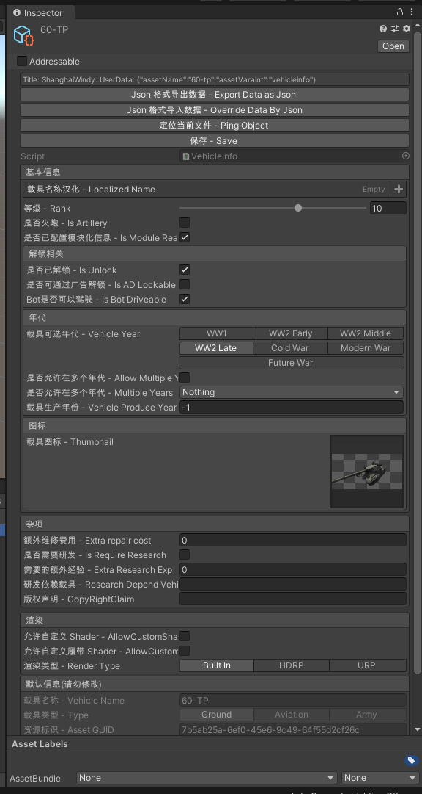
2. Vehicle HitBox 载具伤害模型
Data Binding 数据设置

Assign the variable External Armor Model with your HitBox model.
Click Create Prefab Button.
将你的伤害模型 拖入 External Armor Model 中
点击 生成预制 按钮
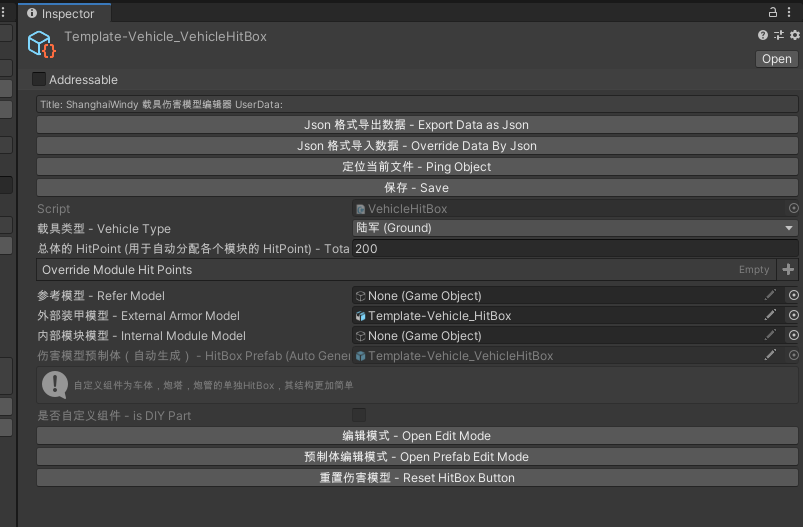
Click Open Edit Mode Button
点击 编辑模式 按钮
Edit Mode 编辑模式
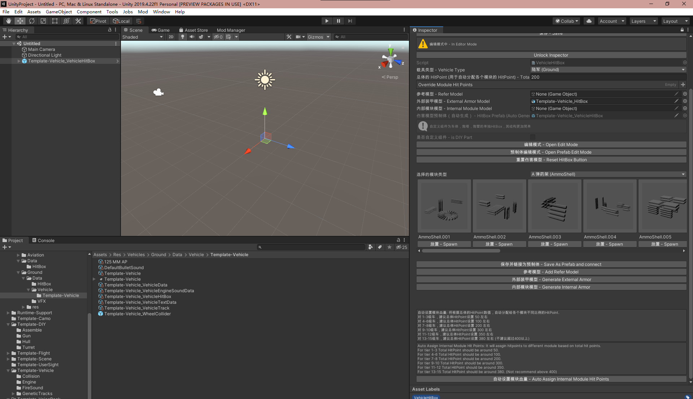
Click Generate HitBox Model.
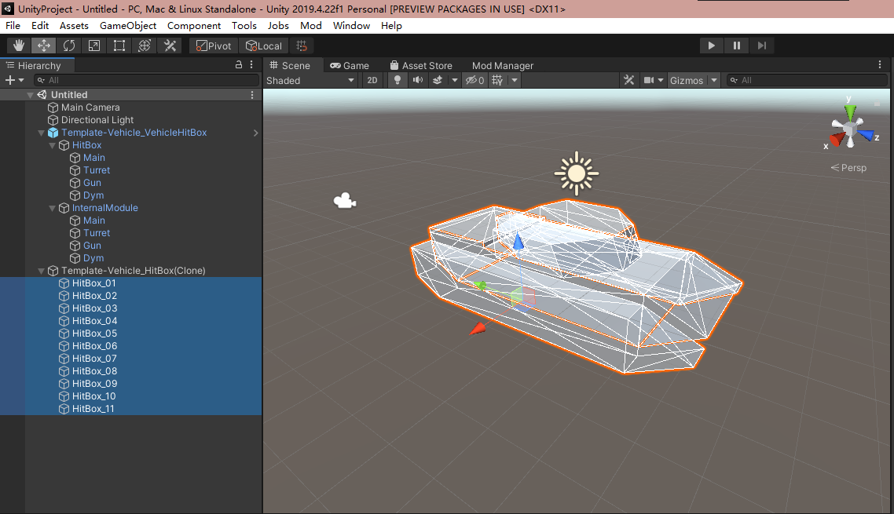
You will notice that HitBox Model are generated in the scene.
Armor Thickness and Type 装甲厚度与类型
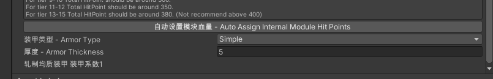
You can set the armor thickness by clicking it.
HitBox Parent 伤害模型父子关系
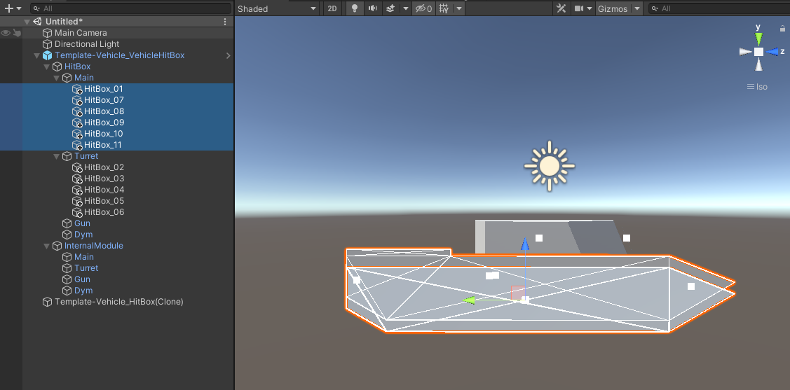
Drag HitBox gameobject to Main,Turret,Gun,Dym depending on its type.
拖拽 HitBox 物体，根据其类型放置到 Main,Turret,Gun,Dym 物体下
Module Place 模块放置
You need to set module if you want it can be damaged in module mode.
如果你需要载具在模块模式下可以被损坏，则需要设置内部模块

Select Module Type and click **Spawn **Button
选择模块类型，点击放置按钮
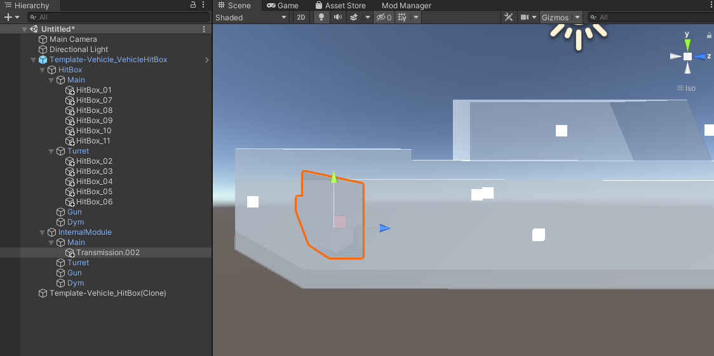
Place it to right position and right parent.
将模型放置于正确的位置和父节点下
Module HP 模块血条
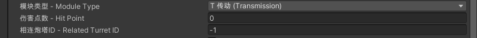
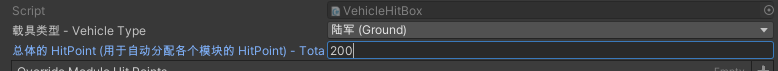
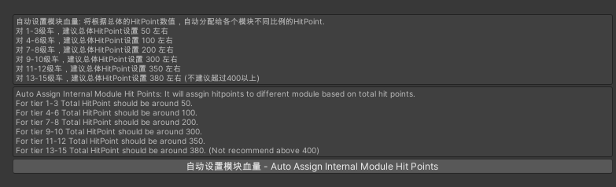
Every module has its hidden HP. You can set it individually.
Also, you can set it automatically. Set the total hit point and click Auto Assign Internal Module Hit Points.
每个模块有一个隐藏的血条机制，你可以为每个模块独自设置。
此外，你可以设置一个总血量，然后分配给每个模块。
Module Crew 模块载具职业
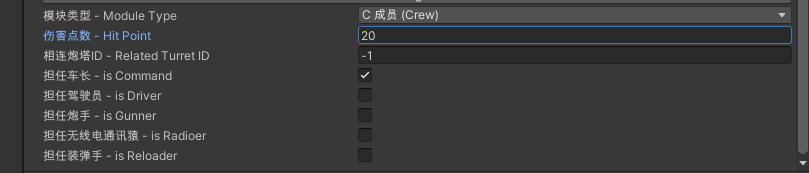
For crews,you need to toggle on their role
对于成员，你需要设置他们的职业
Module Ammo Shell 模块弹药架
For Ammo Shell, you need to set bounds for ammo shell to control how the ammo shell change when capacity change.
对于弹药架，你需要设置边界，来控制弹药数量变化时，弹药架的变化。
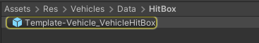
Double click vehicle hitbox prefab and set the internal module component on the AmmoShell gameobject.
双击你载具生成的 VehicleHitBox 的预制体，找到 AmmoShell 物体上挂载的 InternalModule 组件
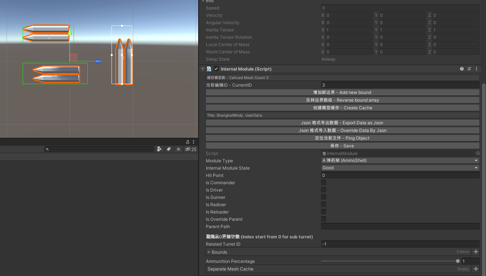
Click **Add new bounds **button and resize it to fit the ammo shell.
Click Create Cache Button to general mesh data.
Press Ctrl + S to save the prefab.
点击 **添加新边界 **按钮，调整其大小
点击 **创建模型缓存 **按钮，生成相关数据
点击 Ctrl + S 来保存对预制体的修改
Save prefab 保存预制体
To save the edit of hitbox,you need to click Save as prefab and connect button.
为了保存伤害模型的预制体，你需要点击保存并链接为预制体按钮。
3. Vehicle EngineSound Data 坦克引擎数据
Drag your sound files to the project window. And assign the variables one by one.
将对应的音效文件拖入。
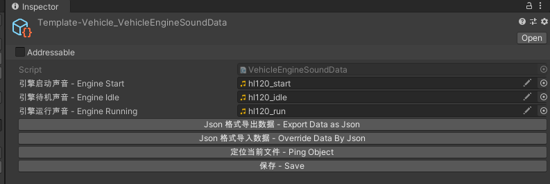
4. Vehicle Text Data 坦克详细参数数据
Create Bullet Related Assets 创建子弹相关资源
We need to create fire sound assets and bullet data assets first.
我们需要先创建开火音效资源，与炮弹资源。
 By right clicking the project window,you can create fire sound asset and bullet data asset.
By right clicking the project window,you can create fire sound asset and bullet data asset.
右键点击 Project 窗口，你可以创建开火音效与炮弹资源。
FireSound Asset 炮声资源

Set the variable of Fire Near and Fire Far with fire sound.
拖入相应音效文件。
Bullet Data Asset 子弹
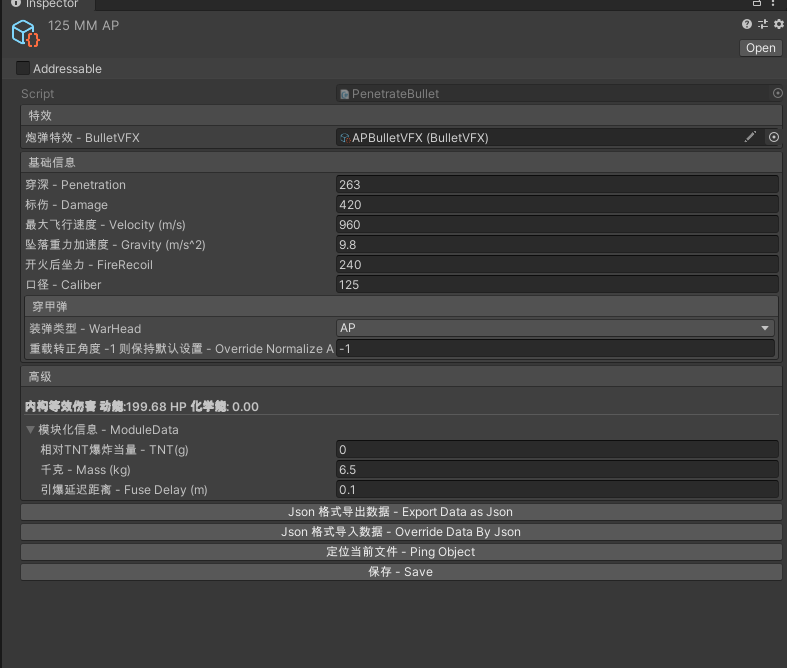
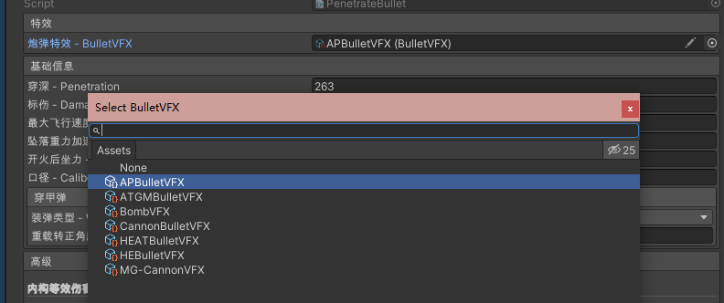
You need to select BulletVFX according to your ammo type.
你需要根据你的炮弹类型，来选择其特效文件。
VehicleTextData 载具详细数据
Set the vehicle data as you wish or according to the picture.
Base Data 基础数据
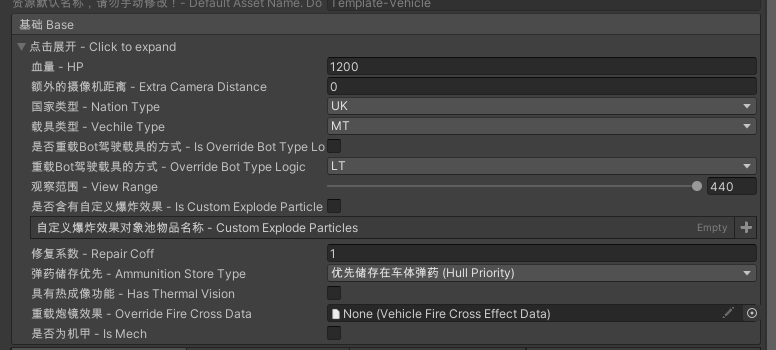
Track 移动
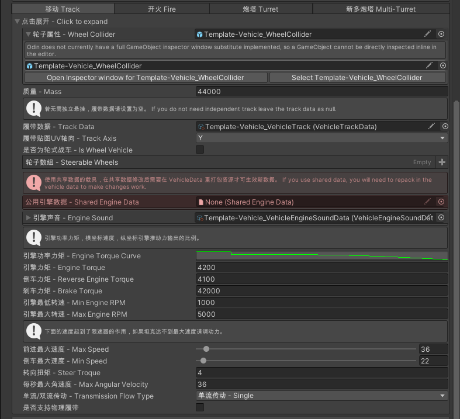
Fire 开火
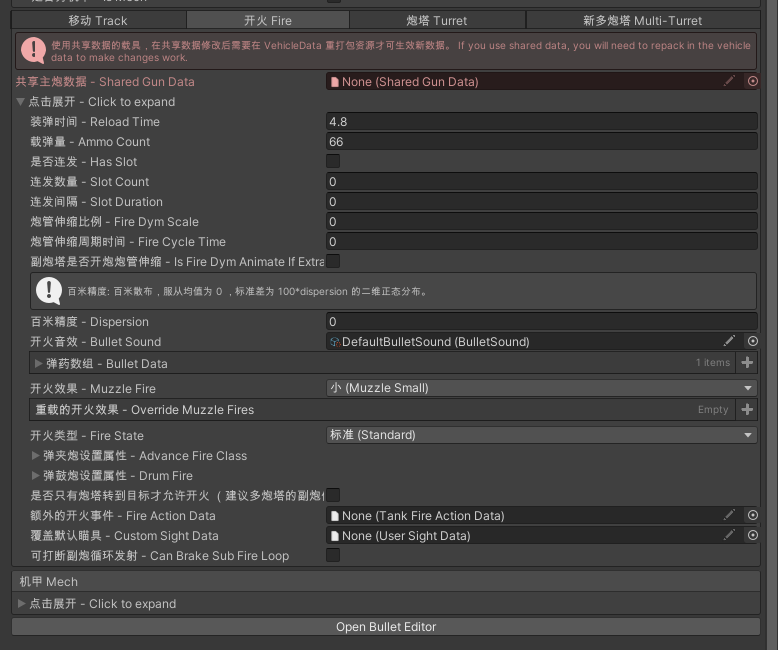
Turret 炮管
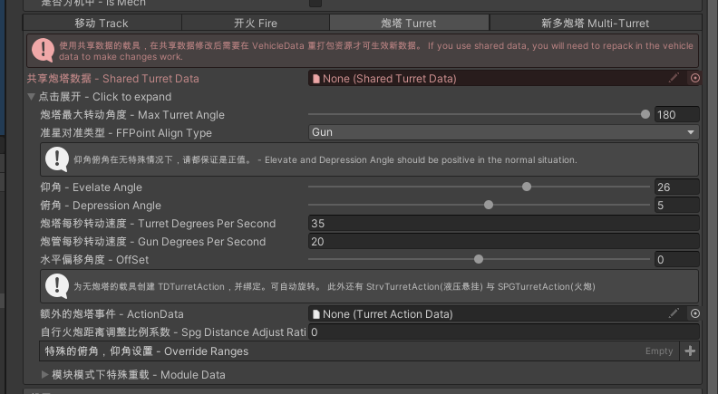
Import Data From Tankgg 从 Tank GG 导入数据
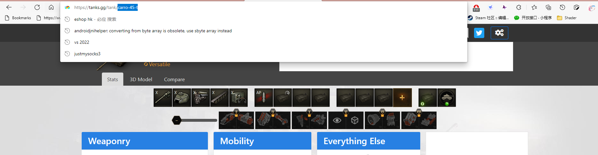
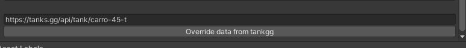
You can import a part of track,turret and gun data from tankgg. You need to add other missing data!!!
你可以从tankgg 导入 一些相关数据，但你需要补齐其他的缺失数据。
5. Vehicle Data 坦克打包数据

Assign the variable MainModel with the one that you have set the collider and click Open Edit Mode.
将设置了 Box Collider 的坦克预制体模型拖入至 MainModel

Move and rotate the GameObject with orange icon to the right position and rotation. Then,press 'K' key to save the transform data of the selected GameObject to the vehicle data.
Then,Click UnLock Inspector button to exit.
移动与旋转橙色的图标来将对应物体放置于合适的位置，点击 K 来保存相关信息。
点击 **UnLock Inspector **按钮退出
6. Wheel Collider 坦克负重轮
Drag the WheelCollider and the main model into the scene so that you can edit the wheel collider data much more easier.After you set them,right click the variable with blue rect and click apply to prefab XXXX.
将 WheelCollider 和 载具模型拖入场景，然后设置 WheelCollider 的属性，并如图进行保存

You can refer to this picture to set the fiction of the wheel collider.
你可以参考如下设置

7. Vehicle Track Data 坦克履带
Assign the variable Track Mesh. (You can use Panzer_Track_Middle prefab if you don't prepare the single track model)
And edit the Track Distance(You can leave it for default value now)
Other data are generated by editor itself. So don't touch it unless you know what you are doing.
设置 Track Mesh. (如果你没履带素材，你可使用预制体 Panzer_Track_Middle )
你可以设置 Track Distance(也可以保持默认数值)
其他数值由编辑器生成，不用碰他们

Drag the GameObject generated by VehicleData to Target Edit Object.
Then Click the Load Suspension Data Button.
(If you have deleted that GameObject. You can regenerate it by going back to VehicleData. Then Click Open Edit Mode and click UnLock Inspector)
For your convenience,you can hide the HitBox from here.
将由 VehicleData 生成的模型拖拽到 Target Edit Object 中
然后 点击 Load Suspension Data 按钮.
(如果你已经删除了 VehicleData 生成的模型的模型. 你可以回到 VehicleData. 然后 点击 Open Edit Mode 再点击 UnLock Inspector)
为了你操作方便，可以在这里隐藏伤害模型

Then,Click Create Node. Surround the track with your nodes.
然后,点击 Create Node. 如图，用顶点包围履带.

When you have done it,you can click Preview Track. You can remove the static track to view the advacne track more clearly.
Click Unlock Inspector when you have finished editing the track.
完成此步骤后，你可以点击 Preview Track 来预览履带 （可移除静态履带获得更好的观察）
编辑完毕履带后点击 Unlock Inspector.
8. Build VehcileData to Prefab 打包载具

Find VehicleData and click Pack Asset. It will generate two prefab located at Assets/Res/Cooked/xxxx_Pre and Assets/Res/Cooked/DedicatedServer/xxxx_Pre
For the client,only the first one is useful. You will need to do this build task again if you have changed the hitbox or edit the node transform with orange icon.
找到 VehicleData 然后点击 Pack Asset. 他会创建两个物体 位于 Assets/Res/Cooked/xxxx_Pre and Assets/Res/Cooked/DedicatedServer/xxxx_Pre
第一个是客户端文件，第二个是服务器端文件. 如果你修改了碰撞模型，伤害模型或者橙色物体的位置，都需要重进行此步骤
Create Mod Package 打包模组
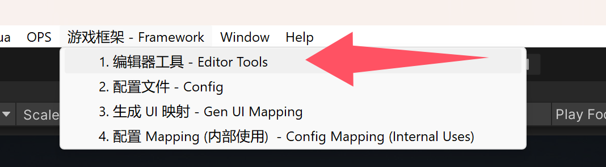
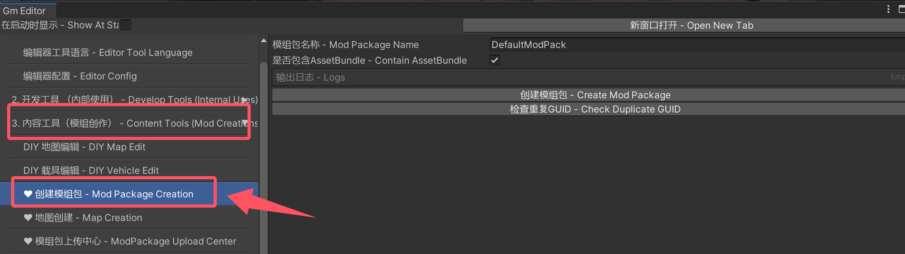
Open Mod Manager again.
再次打开 Mod Manager .
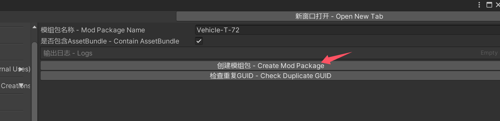
Name a package. You can't just name it as your vehicle name. You should name it in the following pattern Vehicle-XXXXXX.
And click Create Mod Package Button.
命名 package. 你不能以载具名称来命名！！！会加载错误！！！. 你应该用以下方式来命名 Vehicle-XXXX (其中 XXXX 是你的坦克名称).
然后点击 Create Mod Package 按钮.
BuildPipline
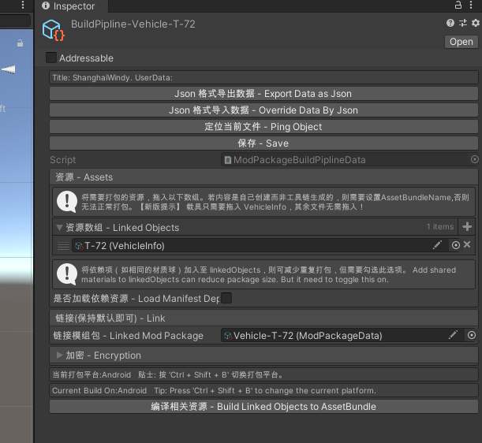
Drag your vehicle info to the linked object to the linked object. And then,click the Build Linked Objects to AssetBundle button.
Press Ctrl + Shift + B to select your desired platform. Remember you can't run mods with an incorrect build platform
ModPackageData
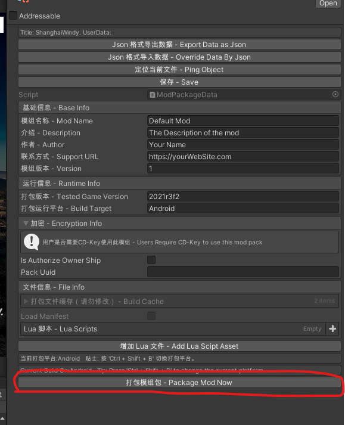
Then click the Linked Mod Package.Edit the infos and click Package Now.
You modpackage will be generated at UnityProject\Build\Mod-Package. And its extension is modpackage.You can test it with the common installation.
将 vehicle info 加入到 linked object 中.
点击 Ctrl + Shift + B 切换你要的平台. 模组必须使用相同的平台才能运行
然后点击 Build Linked Objects to AssetBundle 按钮.
然后点击 Linked Mod Package.编辑信息然后点击 Package Now.
你的模组文件会生成在 UnityProject\Build\Mod-Package. 扩展名为 modpackage. 可用与之前官方模组与社区模组一样的方式进行安装.
If you switch the platform. You should go to the BuildPipline and click the Build Linked Objects to AssetBundle button. Then go to the Linked Mod Package and click Package Now.
如果你切换平台需要重开始 BuildPipline 的步骤.
If you have any issue during reading this tutorial,you can send an email to me. My E-mail: 403036847@qq.com Or Contact me on VK
如果你在阅读本教程过程中遇到任何问题，都可以 QQ 联系我 QQ:403036847
Special Vehicle Guidance 特别载具指南
Wheel Vehicles 轮式载具

For wheel vehicles,you should prepare the model like this. LeftTrack and RightTrack can be an empty gameobject but it can't be missing.
模型如上图准备 LeftTrack 和 RightTrack 可以是空物体，但不可缺少

You can refer this setting for your wheel vehicles.
轮式载具设置可以参考上图
Slot Gun 机炮

To make gun like M3 Stuart,you can refer this.
参考上图设置
Drum Gun 弹鼓炮

To make drum gun like Progetto 65,you can refer this.
参考上图设置
Advance Gun 弹夹炮

To make advance gun like Bat 25t,you can refer this.
参考上图设置
Multi-Turret 多炮塔
For example,bmd-1 is using the multi-turret mechanic to shoot common bullets and atgm.
以 BMD-1 的副炮导弹为例。

You should first perpare model like this.
你需要按如上结构准备模型。

Then, configure like this.
然后，像这样配置数据。

Be caution! The position of ffpoint and fireeffect can only be set in the inspector.
注意，炮弹发射点与开火特效口由偏移控制。
T-35 example T-35 例子
Hierachy:
父子结构

Vehicle Text Data:
数据参考

Two barrel example ST-II 双管例子
The pivot position of second barrel:
第二个炮管的模型坐标轴
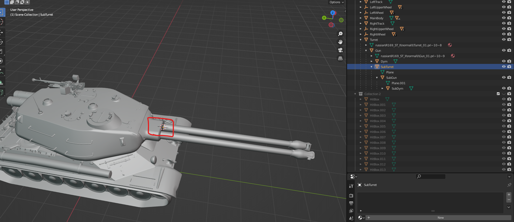
Hierachy:
父子结构

Vehicle Text Data:
数据